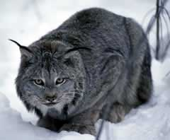

AlaskaStories.com

Lynx...
Apocalypse Design Alaska adventure clothing and equipment.
Apocalypse Design corporate headquarters.
Alaskan Alpine Club Alaska mountain climbing club. More of this website's sort of stuff.
That photo is a 150 foot ice tower, March 2005.

ParkServiceCorruption.com. Our benevolent National Park Service thugs.

Think.ws Intellectual technology to solve problems caused by governmental / organizational technology.
ProjectNight.com Every Wednesday Night Project Night at Mark's Shop.

BarbecueNight.com Every Thursday Night Barbecue At Dick Flaharty's.
PackRafting.Blogspot.com The Roaming Dials, Alaska adventurers.

Buchanan Lake A cool gravel pit lake with floating islands.

FloatingIsland.net Floating island information.

A cool photo down in a glacier moulin, looking up. It does not link to anything.

BlackMast.net Mischief.
SailingAnarchy.com Sailing Anarchy

ExtremeDreams.com John Svenson's cool mountain art, Haines Alaska.

WinterKing.com Homer Alaska. Why is this the best coastal fishing charter in Alaska? Inordinately safe custom boat. Meticulously clean and neat. Fun, dynamic crew who pay attention to details. The owners have classic Alaska stories and friends. Located in awesome Homer, on the spit or course.

AlaskanCottages.com Where you want to stay in Homer. Your first choice if it is available.

MooseJaw.com Online outdoor gear store, by people having fun.
FreedomOutlaws.com The definitive statement of those who support American individual freedom.
UltimateGeoCache.net The undisputable Ultimate GeoCache.
Bear stories Bear story books by Larry Kaniut at kaniut.com. The REAL bear stories.
EarthTrekUK.net Karl, walking around the world.
BigDeadPlace.com The REAL Antarctica stories. No few Alaskans there. Similar to Alaska pipeline stories, war stories, and other fiascos.
Vietnam Helicopter Pilots Assn Museum War stories, not unlike climbing stories.
Antonovllc.com A couple Alaskan airplane drivers with their Russian Antonov AN-2.
ABECAlaska.com Guided backpacking and river trips in Alaska's Brooks Range. (ABEC? Always Bring Extra Chocolate)
MaclarenLodge.com Maclaren River Lodge on the Denali Highway, south side of the Alaska Range. Their webcam shows the location of some Alaska stories.
Project420.com Some guys having fun with Hemp stuff, including pipes, if you can imagine that.
CourtCorruption.com Court corruption, if you can imagine such a thing, exampled at Yakima Washington, for your amusement.
Means Of Inquiry.org Effective inquiry of concepts and institutions.
Fully Informed Jury Association What you need to know for jury duty.
SumOfIgnorance.com Obvious.
SumOfKnowledge.com Requires thinking.
The edibles section...
Basically Basil Organic garden foods, herbal oils and vinegars, made here in pesticide-free central Alaska. These flavors are outrageously good, if not better than that.

Our Operative for AlaskaStories.com field decisions.
All decisions are field decisions.
Stories 1
Stories 2
Stories 3
Stories 4
Stories 5
Stories 6
Stories 7
Stories 8
Stories 9
Stories 10
Stories 11
Stories 12
Stories 13
Stories 14
Places
Concepts
Smoking
Smoke Photos
Smoke Others
Stuff
Home